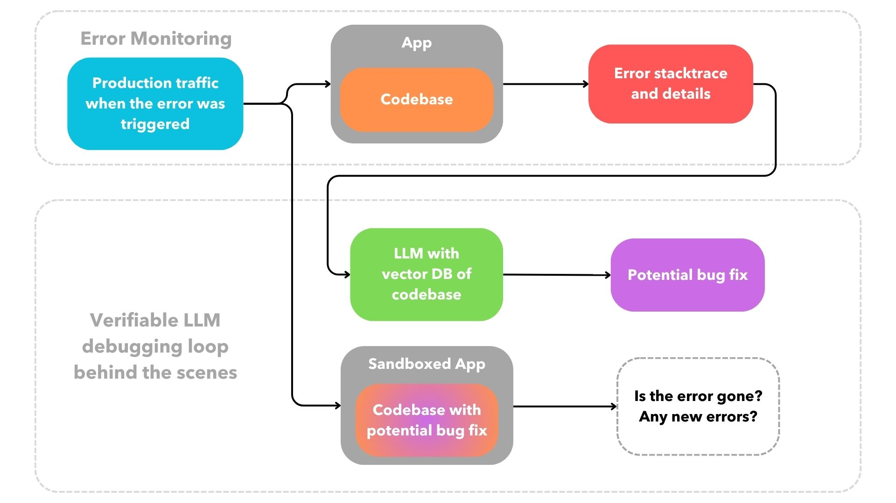

2024-02-24
LLMs can process a lot of unstructured information and quickly generate code faster than humans, but it is often code that is not production ready, or may not even run at all. This is why today we need to peruse, or manually run, LLM-generated code. However, programming languages can be easily evaluated by non-LLM computer programs unlike a natural language like English. This allows us to understand an LLM's output without having to look at it ourselves. We can even go a step further and programmatically verify if the code generated by an LLM is using valid syntax. However, how can we tell if the code generated by an LLM is doing the right thing? In other words, how can we programmatically verify that the generated code follows the functionality described to the LLM in English? This type of verification is hard to do unless the expected output of the LLM-generated code is known ahead of time which is generally not the case. However, when debugging with LLMs we do know the expected behaviour is. The LLM-generated code needs to fix the provided bug without introducing any new ones.
The implications of a type of cloud infrastructure for containerized applications that can submit pull requests that verifiably fix existing production bugs while following codebase conventions are vast. For devs, using this type of self-healing infrastructure can mean spending significantly less time debugging, allowing us to focus on building new features and shipping faster. And for end-users, a smoother, more reliable experience. Let's go over how this type of cloud offering works by first starting with how we are currently using LLMs to debug our code.
Today, we debug errors with LLMs using chat-like interfaces within a terminal, website or code editor and we verify the LLM's generated code by perusing it and/or manually running it within our codebase. However, a less painful debugging workflow is possible outside of a chat interface where the mistakes made by the LLM are not visible to us.
With an opinionated infrastructure setup, we can replay production traffic at the time of an error into the sandboxed app running an LLM-generated potential bugfix of said error in order to verify the correctness of the code generated. The desired output of the workflow is that the error goes away and no new error is introduced. This is a rough sketch of what I am describing:
We shouldn't have to peruse, or manually run, an LLM's generated code to know if it failed. We can evaluate the LLM's generated code programmatically as long as we know what the expected behavior of the generated code should be based on a previously determined input.
LLMs won't be able to fix most errors, but we improve the signal to noise ratio when we only see a pull request if and only if the code generated by the LLM is able to verifiably resolve the given error without introducing new ones. This means that at present it won't be fully self-healing as it will fail most of the time behind the scenes, but as the capabilities of generative AI models to retain more context increases and their lazy tendency to produce incomplete code or hallucinate decreases, the hit rate will go up and the self-healing capabilities of such a system will become more robust and valuable.
The type of cloud offering that can propose bugfixes automatically needs two important features to be able to provide the best UX and easily run a behind-the-scenes LLM debugging loop like the one described above, or in other words, to let the LLM passively do the debugging for us:
1. git-based deployment process for containerized apps
A git-centered deployment experience allows us to deploy by pushing a git branch to a remote repository without having to configure a CI/CD system.
This workflow has been around since 2009 thanks to Heroku, the grandfather of all PaaS. This DevOps abstraction tucks away a fair amount of
complexity by making some assumptions about our app. For most cases, it really should be
as simple as some form of pushing to a branch with a Dockerfile or docker-compose.yml in
it
without having to deal with the fairly standard DevOps process of:
DockerfileI do wish more container cloud offerings today where as easy to use as the git-based, webapp offerings of Netlify or Vercel. Fly.io is one good example of a provider with a seamless, git-based deployment process for containerized apps. Cloud infrastructure that abstracts away the repetitive parts of the deployment process not only has superior UX, but it can easily provide features that can save us a lot of development time like preview deployments. Most importantly, a git-based deployment process also makes it possible to programmatically replicate deployments behind the scenes. This is imperative to be able to propose verifiable bugfixes as we can test if an LLM can generate code that fixes a given bug, and do that repeatedly for all bugs, without an overly complicated CI/CD workflow, or some sort of spaghetti of yaml.
2. automatic replay of production traffic via SDK-less error monitoring
Highlight, DataDog and Sentry have led the charge in error monitoring. I have personally been a happy Sentry user for years. Their UI to triage, resolve and dive into errors does the job. Admittedly, the times where I have had to manually hook up a CI/CD to Sentry and programatically pass on information about deployments, releases, and compilation source maps across multiple environments it has been a massive pain. However, Sentry's setup works particularly well when using some sort of PaaS integration for it like the one offered by Vercel as it abstracts all of the complexity described above.
The data collected by these error monitoring tools
is primordialy to triage errors. However, this data can also be used to replay production traffic to sandboxed staging or development environments to improve reliability of upcoming software releases. Most error monitoring tools offer SDKs to explicitly instrument errors and networking calls within an app which can be tedious. However, some providers like
DataDog have
SDK-less error monitoring offerings built on eBPF. eBPF is a Linux technology that
can run sandboxed programs in the kernel without changing kernel source. This technology opens the door for powerful error
monitoring tools by hooking directly into kernel OS calls without any additional syntax required
within a containerized codebase. However, fully SDK-less error monitoring via eBPF programs requires privileged, or
sudo, access to hook into the kernel to then span the containerized app as a child process. This
can be a complicated setup as most containerized deployment systems provide a sandboxed, or unprivileged,
environment to run apps on.
As such, SDK-less error monitoring is less common and typically reserved for business critical high performance needs.
However, an SDK-less setup provides both a better UX, and the ability
to replay production traffic behind the
scenes which is necessary to verify the
LLM's proposed bugfixes programmatically.
I find the intersection of LLMs and devtools particularly fascinating because programming languages can be evaluated by non-LLM computer programs, unlike a natural language like English. This allows us to deteministically and programatically understand an LLM's code generated output without having to look at it ourselves. That is a big first step, but how can we tell if the code generated by an LLM is correct or not? Unfortunately, it is not possible to verify code generated by an LLM because we would need to know the expected output of the generated computer program which is not generally the case. However, the next frontier of devtools is one where we are able to verify the correctness of an LLM's output for very specific types of code generation in which we know what the program's output should be. This is why frontend devtools that turn Figma designs to React components have been on the rise. Generative AI models can understand images which represent data that can be used to verify the correctness of LLM-generated frontend code. Similarly, we can verify code generated by an LLM that was tasked to fix cloud infrastructure errors because the expected output is simply that the error goes away and no new errors arise.
Drop me a line at lfdepombo at gmail dot com if you want to learn more about a cloud infrastructure offering I have been working on that proposes verifiable bugfixes. I would also love to hear your thoughts on any type of programmatic verification for LLM-generated code, or on building abstractions with LLMs without directly exposing a chat interface to end-users.